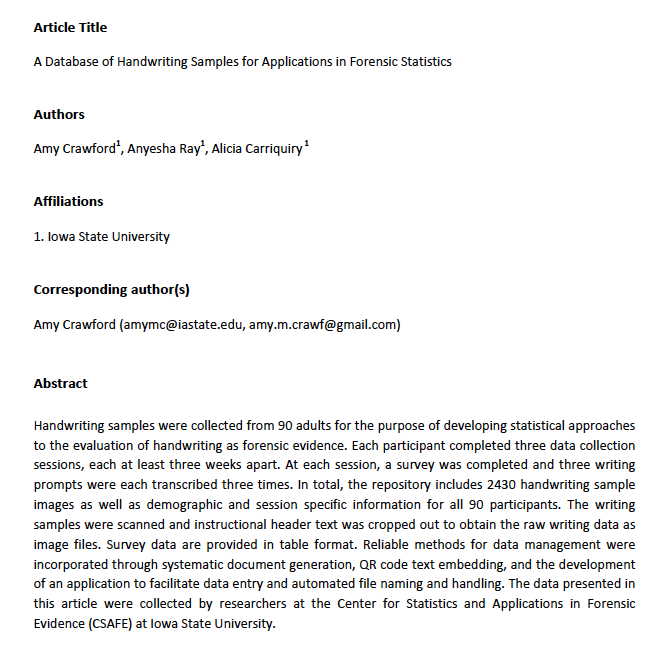
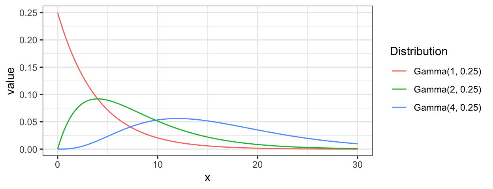

Chapter 4 Project G: Handwriting (& Signatures)
The handwriting project has four major focuses:
- data collection
- computational tools
- statistical analysis
- glyph clustering
- closed set modeling for writer identification
- communication of results
4.1 Data Collection
We are conducting a large data collection study to gather handwriting samples from a variety of participants across the world (most in the Midwest). Each participant provides handwriting samples at three sessions. Session packets are prepared, mailed to participants, completed, and mailed back. Once recieved, we scan all surveys and writing samples. Scans are loaded, cropped, and saved using a Shiny app. The app also facilitates survey data entry, saving that participant data to lines in an excel spreadsheet.
As of September 2019, Marc and Anyesha are the primary contacts for the study. Phase 2 recruiting is underway.
The first 90 complete writers were published: > Crawford, Amy; Ray, Anyesha; Carriquiry, Alicia; Kruse, James; Peterson, Marc (2019): CSAFE Handwriting Database. Iowa State University. Dataset. https://doi.org/10.25380/iastate.10062203.
Anyesha and I worked on a variety of data quality checks and batch processing prior to publication. Scanner cuts a portion of the left side of the documents off sporadically. Survey date checks. Batch removal of header.
Figure 4.1: Batch process samples: rotate 0.05 degrees, turn black line pixels white, crop 450 pixels from top (under QR code), rename.
We hit a bump with the ISU Office for Responsible Research (ORR). They had concerns with the demographic variables we collected on the surveys and wanted to publish. We "negotiated’’ and settled on the following survey information.

A data article has been submitted to Data in Brief. “I think this manuscript should probably be accepted providing some small revisions are made. Overall it is a very high quality data article.”
- Sample selection method details.
- Link to Shiny application for scan and survey processing.

4.2 Computational Tools
handwriter is a developmental R package hosted at https://github.com/CSAFE-ISU/handwriter. It is our major computational tool for the project. The package takes in scanned handwritten documents and the following are performed.
- Binarize. Turn the image to pure black and white.
- Skeletonize. Reduce writing to a 1 pixel wide skeleton.
- Break. Connected writing is decomposed into small manageable pieces called glyphs . Glyphs are graphical structures with nodes and edges that often, but not always, correspond to Roman letters, and are the smallest unit of observation we consider for statistcal modelling.
- Measure. A variety of measurements are taken on each glyph.

Figure 4.2: Connected text processed by handwriter. The grey background is the original pen stroke. Colored lines represent the single pixel skeleton with color changes marking glyph decomposition. Red dots mark endpoints and intersections of each glyph.
For an input document, functions in the package give back a list of glyphs with path and node location information, adjacency grouping assignment, slope (pictured below), and centroid locations, among other things.

Figure 4.3: A visual of the ‘’slope’’ calculation for two glyphs.
Compactness measuremnt, by James.

Figure 4.4: A visual of the ‘’compactness’’ calculation for glyphs.
We are currently working to incorporate the cluster grouping assignments into the package. This will be complete pending creation of a template.
4.3 Statistical Analysis
4.3.1 Clustering
Paper submitted in September 2019.

Rather than impose rigid grouping rules (the previously used ‘’adjacency grouping’’) we consider a more robust, dynamic \(K-\)means type clustering method that is focused on major glyph structural components.
Clustering algorithms require:
- A distance measure. For us, a way to measure the discrepancy between glyphs.
- A measure of center. A glyph-like structure that is the exemplar representation of a group of glyphs.
Glyph Distance Measure
We begin by defining edge to edge distances. Edge to edge distances are subsequently combined for an overall glyph to glyph distance.
Edge to edge distances:
Consider the following single edge glyphs, \(e_1\) and \(e_2\). Make \(3\) edits to \(e_1\) to match \(e_2\). The combined magnitude of each edit make the edge distance.
Figure 4.5: Two edges that are also glyphs, \(e_1\) and \(e_2\).
- Shift. Anchor to the nearest endpoint by shifting.

Figure 4.6: Shift = 1.4.
- Stretch. Make the endpoints the same distance apart.

Figure 4.7: Stretch = 9.9.
- Shape. Bend and twist the edge using \(7\) shape points. Shape points are ‘’matched’’ and the distance between them is averaged to obtain the shape contribution to the distance measure.

Figure 4.8: Shape Components.

Figure 4.9: Shape = 8.4.
Combine the three measurements for a final edge to edge distance. D\((e_1, e_2) = 1.4 + 9.9 + 8.4 = 19.7\).
For multi-edge glyphs get pairwise edge distances. Minimize total glyph distance using linear programming to match edges (sudoku). Down-weight edge distance contributions based on edge lengths. There are nuances associated with all of this. We must handle glyphs with differing number of edges, and consider the direction in which edges are compared (endpoint labels are arbitrary). All of this is addressed in detail in the paper.
Measure of glyph centers
Take the weighted average of endpoints, \(7\) shape points, and edge length.
Figure 4.10: Weighted mean between two glyphs. p = weight on blue.
The mean of a set can be iteratively calculated by properly weighting each newly introduced glyph. For stability, the \(K-\)means algorithm finds the glyph nearest the mean and uses that as measure of cluster center.
\(K-\)means Algorithm for Glyphs
Implement a standard \(K-\)means12 with handling of outlier observations.3
Begin with fixed \(K\) and a set of exemplars. Iterate between the following steps until cluster assignments do not change:
- Assign each glyph to the exemplar it is nearest to, with respect to the glyph distance measure.
- Calculate each cluster mean as defined. Find the exemplar nearest the cluster mean and use it as the new cluster center.

Figure 4.11: One of \(K=40\) Clusters. Exemplar & cluster members (left). Cluster mean (right).
Use one document from each training writer to cluster and obtain a template. Make cluster assignments for the remaining documents by finding the template exemplar each glyph is nearest to. Below is an example of data that arises from the clustering method.

Figure 4.12: Data arising from the cluster grouping method. Cluster #’s ordered by most to least populated.
4.3.1.1 Outliers
During clustering, outliers are considered glyphs that are at least \(T_o\) distance units from cluster exemplars. The algorithm sets a ceiling \(n_o\) on the allowable number of outliers. Initially, we were going to ignore the outliers, but now they are considered the \(K+1\)th cluster and contribute information about writer.

Figure 4.13: Cluster of outliers.
4.3.1.2 CVL + CSAFE Template Development
Template development on 23 CVL documents and 77 CSAFE documents, each from a unique writer.
- Starting values.
- Changes to the distance measurement to emphasize shape, and focus less on character size.
- \(\frac{1}{2}\times\) Stretch (straight line distance component, ~ size)
- 1 \(\times\) Shift (nearest endpoint)
- 2 \(\times\) Shape
- (ghost edge comparisons)\(^2\)
- A sample template is picture below.
- 27 CVL documents (6 unique), 73 CSAFE documents (2 unique)
- Currently working on 20+ algorithm runs with a variety of starting values to select final template.
Figure 4.14: Cluster Members and Exemplars.
Figure 4.15: Cluster Means.
4.3.2 Closed set modeling
Model #1, Straw Man
Let,
- \(\boldsymbol{Y}_{w(d)} = \{Y_{w(d),1}, \dots, Y_{w(d),K}\}\) be the number of glyphs assigned to each cluster for document within writer, \(w(d),\) and
- \(\boldsymbol{\pi}_w = \{\pi_{w,1}, \dots, \pi_{w,K} \}\) be the rate at which a writer emits glyphs to each cluster.
- Here, \(K = 41\), \(d = 1,2,...,5\), \(w = 1,...,27\).
Then a hierarchical model for the data is \[\begin{array}{rl} \mathbf{Y}_{w(d)}\: &\stackrel{ind}{\sim} \:Multinomial(\boldsymbol\pi_{w}), \\ \boldsymbol{\pi}_w \:&\stackrel{ind}{\sim}\: Dirichlet(\boldsymbol{\alpha}),\\ \alpha_{1}, \dots, \alpha_{K}\: &\stackrel{iid}{\sim}\: Gamma(2, \:0.25). \label{model_line3} \end{array}\]
Posterior Predictive Analysis
For a holdout document of unknown source, \(w^*\),
- Extract glyphs with and assign groups,
- \(\boldsymbol{Y}^*_{w^*}=\{Y_{w^*,1}, ... Y_{w^*,K}\}\)
- Assess the posterior probability of writership under each known writer \(\boldsymbol\pi_{w}\) vectors.
- i.e. \(p(w^* = w^\prime|\boldsymbol{Y^*}, \boldsymbol{Y})\) for each writer \(w^\prime\) in the training data.
The posterior probability that the questioned document \(\boldsymbol{Y}^*_{w^*}\) belongs to writer \(w^\prime\) with respect to the closed set is, \[\begin{array}{rl} p(w^* = w^\prime|\boldsymbol{Y}^*, \boldsymbol{Y}) & \propto p(\boldsymbol{Y}^*| w^* = w^\prime, \boldsymbol{Y}) p(w^*=w^\prime | \boldsymbol{Y})\nonumber\\ & \propto p(\boldsymbol{Y}^*| w^* = w^\prime, \boldsymbol{Y}) \nonumber\\ & = \int p(\boldsymbol{Y}^*| \boldsymbol{\pi}_{w^\prime}) p(\boldsymbol{\pi}_{w^\prime}| \boldsymbol{Y}) d \boldsymbol{\pi}_{w^\prime}\nonumber\\ & \approx \frac{1}{M} \sum_{m=1}^M p(\boldsymbol{Y}^*| \boldsymbol{\pi}^{(m)}_{w^\prime}) , \mbox{ where } \boldsymbol{\pi}^{(m)}_{w^\prime} \sim p(\boldsymbol{\pi}_{w^\prime}|\boldsymbol{Y}) \nonumber \end{array}\]
for MCMC iterations \(m = 1, \dots, M\). Then, for a given iteration \(m\),
\[ p(\boldsymbol{Y}^*| \boldsymbol{\pi}^{(m)}_{w^\prime}) = p_{w^\prime}^{(m)} = \frac{Mult(\boldsymbol{Y}^*; \boldsymbol{\pi}_{w^\prime}^{(m)})}{\sum_{w_i = 1}^{27}Mult(\boldsymbol{Y}^*; \boldsymbol{\pi}_{w_i}^{(m)}) }. \nonumber \] Calculate the quantitity for each known writer \(w^\prime = w_1, \dots, w_{27}\) in training set to get \[ \boldsymbol{p}^{(m)} = \{p_{w_1}^{(m)}, ..., p_{w_{27}}^{(m)}\}, \] and compute summaries over the MCMC draws, \[ \boldsymbol{\bar{p}} = \{\bar{p}_{w_1},...,\bar{p}_{w_{27}}\}. \]
Results
If we use a single holdout document for each writer (doc 4). The \(\boldsymbol{\bar{p}}\) vector as given above is shown graphically for each holdout document (the rows).

Figure 4.16: Posterior predictive results. Rows are evaluated independently and the probability in each row sums to one. Log Loss = 0.2013
We can use a cross validation routine to estimate error. For each writer, shuffle the order of their body of documents. For the first fold we holdout the first document for testing, for the second fold we hold out the second document for testing, etc.. This yields 6 results analogous to that of the figure above.

Figure 4.17: Posterior predictive results for each fold of the CV routine outlined above. Log Loss is clearly not a great summary of performance.
Evaluating Over-/Under-dispersion (Writer Variability Index)
With a count data model it is important to investigate the presence of over- and under-dispersion. An index of intra-writer variability with respect to a model.
- Multivariate Generalized Dispersion Index (GDI) of Kokonendji and Puig4.
- Relative Dispersion Index (RDI) = \(\frac{\mbox{writer data GDI}}{\mbox{model simulated GDI}}.\)
- High RDI \(\implies\) data over-dispersion and high sample to sample variability.

Figure 4.18: RDIs for the 27 CVL writers under Model #1.
High RDI \(\implies\) data over-dispersion & high sample to sample variability (in the sense of glyph cluster membership rates).

Figure 4.19: Handwriting Samples from Writer #12. Notice the repeated patterns in letters ‘a’, ‘e’, ‘f’, ‘g’, ‘h’, ‘t’, etc. across samples.

Figure 4.20: Handwriting Samples from Writer #23. Note the red ’h’s, green ’ll’s, purple terminal ’y’s, and blue ’loo’s
Model #2, Mixture
There seem to be greatly varying shapes in the relative frequency of cluster fill. We think maybe a more flexible Dirichlet distribution is warranted.
Figure 4.21: Average relative frequency of cluster fill for the 8 most common clusters. Notice writers 12/21 and 6/17/18.
Add flexibility to the original model by including a mixture component in the Dirichlet parameter space.
\[\begin{array}{rl} \mathbf{Y}_{w(d)} | \boldsymbol\pi_{w}, w\: &\stackrel{ind}{\sim} \:Multinomial(\boldsymbol\pi_{w}), \\ \boldsymbol{\pi}_w|\boldsymbol{\alpha},\boldsymbol{\beta}, \rho_w \:&\stackrel{ind}{\sim}\:Dirichlet(\rho_w \: \boldsymbol{\alpha}+ (1-\rho_w) \: \boldsymbol{\beta}), \\ \alpha_{k}, \: \beta_{k} \: &\stackrel{iid}{\sim}\: Gamma(2, \: 0.25) \:\: \mbox{ for } k > 3, \\ \rho_w\: & \stackrel{iid}{\sim}\: Beta(1,1) \end{array}\]
Label Switchin Issues.
The model is non-identifiabile. We need to either place constraints on the parameter space to exclude the possibility of a second mode apriori, or estimate the posterior in both modes and post-process for label reassignment after.
This has been resolved (?) by placing constraints on the first three elements of \(\alpha\) and \(\beta\) with moderately informative priors.
\(\mathbf{\alpha_1 < \beta_1}\), \(\quad\) \(\alpha_1 \sim Gamma(2, 0.25) \:\: \& \:\: \beta_1 \sim Gamma(4, 0.25)\)
\(\mathbf{\alpha_2 > \beta_2}\) , \(\quad\) \(\alpha_2 \sim Gamma(4, 0.25) \:\: \& \:\: \beta_2 \sim Gamma(1, 0.25)\)
\(\mathbf{\alpha_3 > \beta_3}\) , \(\quad\) \(\alpha_3 \sim Gamma(4, 0.25) \:\: \& \:\: \beta_3 \sim Gamma(1, 0.25)\)

Results
The mixing component gives insights into writing style.
Figure 4.22: Average ho_w value for each writer.

Figure 4.23: Writing samples in a variety of styles based on the mixing parameter. From top to bottom, writer #’s 21, 4, 29, 20, 18.

Figure 4.24: Posterior predictive results. Rows are evaluated independently and the probability in each row sums to one. Log Loss = 0.2078
4.3.2.1 Model #2, CVL + CSAFE Template
The following analysis was done for the first 20 CSAFE writers.
- Training docs: s01_pLND_r01, s01_pLND_r03, s01_pWOZ_r02, s01_pPHR_r03
- Testing doc: s01_pLND_r02

Figure 4.25: Average relative frequency of cluster fill for the 8 most common clusters.

Figure 4.26: Posterior predictive results. Rows are evaluated independently and the probability in each row sums to one.
Not surprising. Working on:
- More writers (need to go through handwriter)
- Testing on the phrase prompt
- Including not yet seen CVL writers in analysis.
Model #3, Normal Slopes. Work in progress.
Adding slope measurements into the model.
Let,
- \(\boldsymbol{Y}_{w(d)} = \{Y_{w(d),1}, \dots, Y_{w(d),K}\}\) be the number of glyphs assigned to each group for document within writer, \(w(d),\)
- \(\boldsymbol{\bar{S}}_{w(d)} = \{\bar{S}_{w(d),1}, \dots, \bar{S}_{w(d),K}\}\), be the average slope in each group for document \(w(d)\)
- \(G_{w(d),j}\) be the \(j^{th}\) glyph in document \(w(d)\),
- \(g_{w(d), j} = 1, \dots, 41\) be the available cluster assignments for the \(j^{th}\) glyph in the document,
- \(S_{w(d),j}\) be the slope of the \(j^{th}\) glyph in the document.
- Here, \(K = 41\), \(d = 1,2,...,5\), \(w = 1,...,27\), \(j= 1, \dots,\mathrm{J}_{w(d)}.\)
\[ \bar{S}_{w(d),k}= \frac{1}{Y_{w(d),k}} \sum_{j \ni \mathrm{I}[g_j = k]}S_{w(d),j} \quad \& \quad Y_{w(d),k} = \sum_{j = 1}^{\mathrm{J}_{w(d)}} \mathrm{I}[g_j = k] \]
Then a hierarchical model for the data is
\[\begin{array}{rl} \mathbf{Y}_{w(d)} | \boldsymbol\pi_{w}, w\: &\stackrel{ind}{\sim} \:Multinomial(\boldsymbol\pi_{w}), \\ \boldsymbol{\pi}_w|\boldsymbol{\alpha} \:&\stackrel{ind}{\sim}\:Dirichlet(\boldsymbol{\alpha}), \\ \alpha_k\: &\stackrel{iid}{\sim}\: Gamma(a = 2, \: b= 0.25), \\ \bar{S}_{w(d),k} | Y_{w(d),k}, w, \mu_{w, k}, \sigma^2_{k} \: & \stackrel{iid}{\sim}\: N \left(\mu_{w, k}, \frac{\sigma^2_{k}}{Y_{w(d),k}}\right) \\ \mu_{w, k} | \mu_{k} \: & \stackrel{iid}{\sim}\: N(\mu_{k}, 3) \\ \mu_{k} \: & \stackrel{iid}{\sim}\: N(0, 3) \\ 1/\sigma^2_{k}\: & \stackrel{iid}{\sim}\: Gamma(0.5, 0.1) \end{array}\]
Consider a new document with cluster fill counts \(\boldsymbol{Y}^*\) and average slope measurements \(\boldsymbol{\bar{S}}^*\) from unknown writer \(w^*\).
Posterior Predictive Analysis
Posterior probability that the questioned document belongs to writer \(w^\prime\) with respect to the closed set is: \begin{array}{rl} &p(w^* = w|* ^, ) \ &p(^ | w^* = w^, ) \ & _{m=1}^{M} Mult(^*; _{w}{(m)}) \end{array} for MCMC samples \(m = 1, \dots, M\).
Results
Evaluate the posterior probability of writership for each of the holdout documents.
Figure 4.27: Posterior predictive results. Rows are evaluated independently and the probability in each row sums to one. Log Loss = 0.0883.
Modeling Summary
| Model | Data | LogLoss |
|---|---|---|
| #1 | Adjacency Grouping (not presented) | 0.5413 |
| #1 | Cluster Grouping | 0.2013 |
| #2 | Cluster Grouping | 0.2078 |
| #3 | Cluster Grouping & Glyph Slopes | 0.0883 |
4.4 Communication of Results
Presenting author is in bold.
4.4.1 Papers
- “A Clustering Method for Graphical Handwriting Components and Statistical Writership Analysis”
- Authors: Nick Berry and Amy Crawford
- Submitted to The Annals of Applied Statistics in September 2019.
- “A Database of Handwriting Samples for Applications in Forensic Statistics”
- Authors: Anyesha Rey, Amy Crawford, and Alicia Carriquiry
- Submitted to Data in Brief in October 2019.
- “Bayesian Hierarchical Modeling for Forensic Handwriting Analysis”
- Authors: Amy Crawford, Alicia Carriquiry, and Danica Ommen
- In preparation for submission to PNAS.
4.4.2 Talks
- “Statistical Analysis of Handwriting for Writer Identification”
- August 2019
- Authors: Amy Crawford, Nick Berry, Alicia Carriquiry, Danica Ommen
- American Society of Questioned Document Examiners (ASQDE) Annual Meeting in Cary, NC.
- “A Bayesian Hierarchical Mixture Model with Applications in Forensic Handwriting Analysis”
- July 2019
- Authors: Amy Crawford, Nick Berry, Alicia Carriquiry Danica Ommen
- Joint Statistical Meetings (JSM) in Denver, CO.
- “Forensic Analysis of Handwriting”
- July 2019
- Authors: Alicia Carriquiry, Amy Crawford, Nick Berry, Danica Ommen
- VI Latin American Meeting on Bayesian Statistics (VI COBAL), Lima, Peru.
- “Exploratory Analysis of Handwriting Features: Investigating Numeric Measurements of Writing”
- February 2019
- Authors: Amy Crawford, Nick Berry, Alicia Carriquiry, Danica Ommen
- American Academy of Forensic Sciences (AAFS) Annual Meeting in Baltimore, MD.
- “Toward a Statistical and Algorithmic Approach to Forensic Handwriting Comparison”
- August 2018
- Authors: Amy Crawford and Alicia Carriquiry
- American Society of Questioned Document Examiners (ASQDE) Annual Meeting in Park City, UT.
- “A Bayesian Approach to Forensic Handwriting Evidence”
- July 2018
- Authors: Amy Crawford and Alicia Carriquiry
- Joint Statistical Meetings (JSM) in Vancouver, BC, Canada.
- July 2018
- “Bringing Statistical Foundations to Forensic Handwriting Analysis”
- May 2018
- Authors: Amy Crawford and Alicia Carriquiry
- American Bar Association, 9th Annual Prescription for Criminal Justice Forensics Program in New York, NY.
4.4.3 Posters
- “A Bayesian Hierarchical Model for Forensic Writer Identification”
- September 2019
- Authors: Amy Crawford, Alicia Carriquiry, Danica Ommen
- 10th International Workshop on Statistics and Simulation in Salzburg, Austria
- 1st Springer Poster Award

- “Statistical Analysis of Handwriting”
- May 2019
- Authors: Amy Crawford and Nick Berry
- CSAFE Annual All-Hands Meeting in Ames, IA
- “Statistical Analysis of Letter Importance for Document Examination”
- February 2018
- Authors: Amy Crawford and Alicia Carriquiry
- American Academy of Forensic Sciences in Seattle, WA
- YFSF Best Poster Award
- (Presented AAFS 2018 Poster for a Second Time)
- May 2018
- Authors: Amy Crawford and Alicia Carriquiry
- CSAFE Annual All-Hands Meeting in Ames, IA
4.5 People involved
4.5.1 Faculty
- Alicia Carriquiry
- Hal Stern (UCI, Project G PI)
- Danica Ommen
4.5.2 Graduate Students
- Amy Crawford
4.5.3 Undergraduates
- Anyesha Ray (data collection)
- James Taylor (feature extraction)
Forgy, E. (1965). Cluster Analysis of Multivariate Data: Efficiency vs. Interpretability of Classifications. Biometrics, 21:768–780.↩
Lloyd, S. (1982). Least Squares Quantization in PCM. IEEE Trans. on Information Theory, 28(2):129–137.↩
Gan, G. and Ng, M. K.-P. (2017). K-means clustering with outlier removal. Pattern Recog. Letters, 90:8–14.↩
Kokonendji, C. C. and Puig, P. (2018). Fisher Dispersion Index for Multivariate Count Distributions. Journal of Multivariate Analysis, v165 p180-193.↩